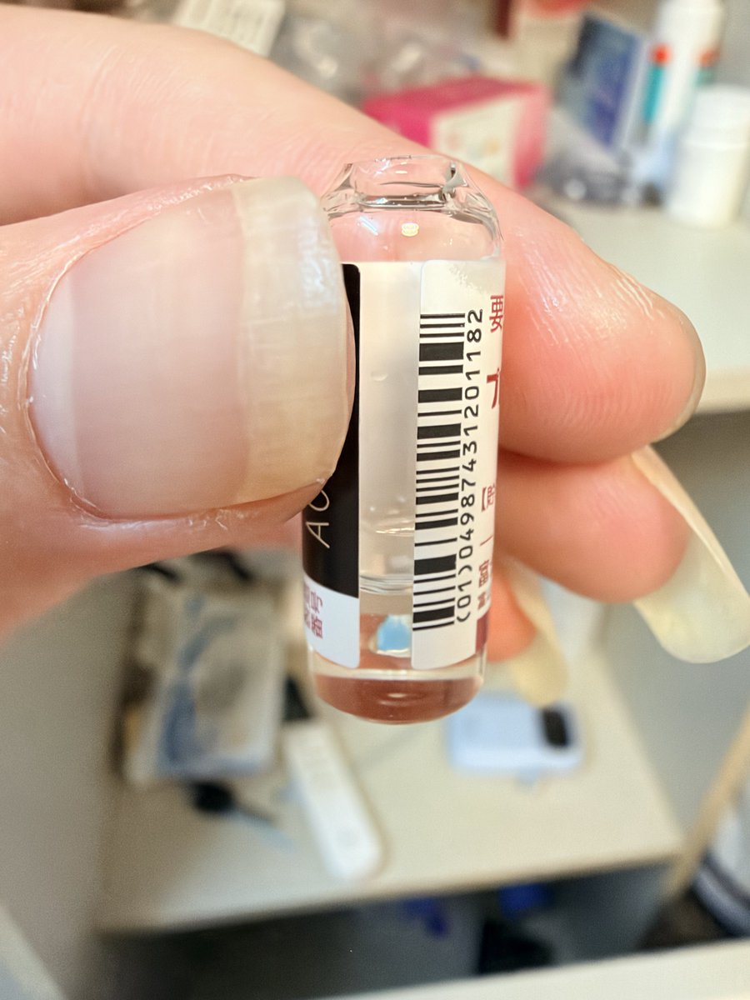

lovely水
@lovelyshuimao
和大家说一下
想要保存日雌到下次再打
请更换全部衣物穿戴无菌服经过风淋室后进入按照ISO14644-1、GB50073-2013、GB50333-2013标准建造的无菌室里
用灭菌注射器AB分别抽0.5ml油液备用
然后B注射器使用双母口鲁尔接头连接0.22µm滤膜再接C空注射器
推滤后注射器C拧上堵头存放在ISO7级无菌箱以便下次取用

lovely水
@lovelyshuimao
每周就这么看着这半品日雌就这么浪费掉
唉一次只能打半瓶 https://t.co/stOYht44T7